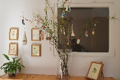
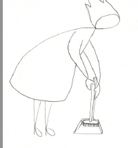
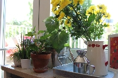

Ambiance
Dans une crèche Montessori, l’ambiance est soignée et préparée de façon à nourrir quotidiennement l’esprit absorbant.
La fonction de « l’esprit absorbant » est la construction personnelle de l’enfant en terme d’adaptation à son milieu familial et social.
Il se construit en fonction de ce qui lui est offert dans son environnement, d’où l’importance des matériels adaptés.
L’ambiance montessorienne a cette particularité d’être structurée, pensée à travers la place des objets, le rangement, la logique et la graduation des petits exercices proposés aux enfants.
Le lieu montessorien s’inscrit dans un temps du réel, où les jeux respectent la réalité quotidienne, les échelles de grandeur et les tâches ordinaires, comme faire la vaisselle, pour les plus grands ou laver les vitres.
Dans cette ambiance, l’enfant vit à son rythme. Tout ce qui est possible est à sa disposition, même le petit vase en verre, rempli de vraies fleurs et les plantations qu’il pourra arroser chaque matin.
Tout est conçu pour l’enfant, dans le respect de ses compétences et d’un véritable libre choix. L’éducateur n’intervient pas tout le temps, il observe beaucoup et parle peu lorsqu’il montre à l’enfant comment utiliser le matériel.
C’est ce qui rend cette ambiance si particulière, parce que dans ce lieu l’enfant a le libre choix de faire seul, à son rythme. Le matériel évolue au rythme des enfants, et c’est pour les plus petits comme pour les plus grands.
L’ambiance est souvent très calme, car l’enfant n’a pas à demander à l’adulte un jeu, il a tout à sa portée, l’adulte lui fait confiance et il le sait.


